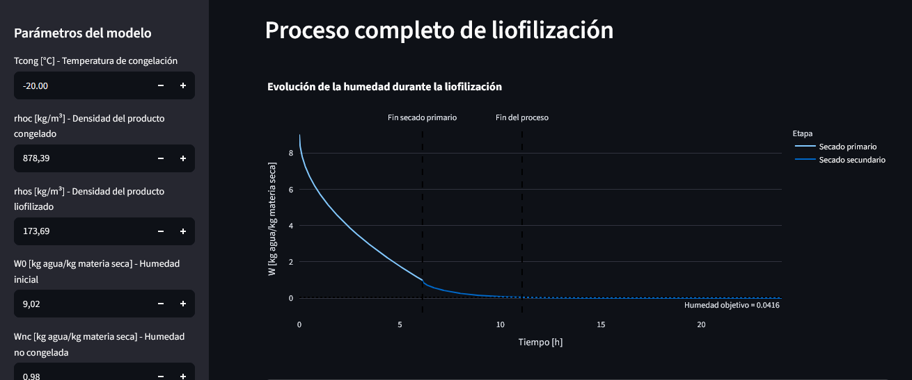
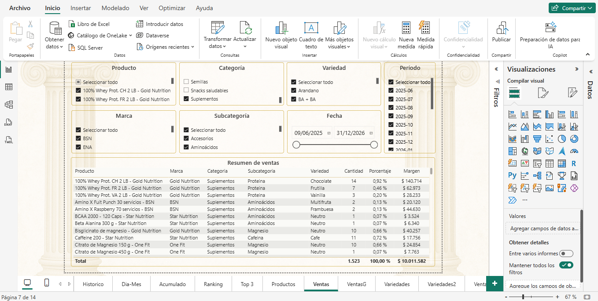

01
Procesos
Análisis, modelado y comprensión de procesos productivos.
INGENIERO QUÍMICO · DOCTOR EN INGENIERÍA
Desarrollo soluciones para analizar, modelar y optimizar procesos combinando ingeniería química, análisis de datos y herramientas digitales.
PERFIL
Soy Ingeniero Químico y Doctor en Ingeniería, con experiencia en investigación, análisis técnico y desarrollo de soluciones.
Mi formación comenzó en la ingeniería de procesos y se fue ampliando hacia el análisis de datos, la programación y las herramientas de inteligencia artificial.
Me interesa especialmente encontrar formas de utilizar estas herramientas para resolver problemas concretos de producción, operaciones, calidad y mejora de procesos.
Procesos, modelado y resolución de problemas técnicos.
ETL, bases de datos, análisis y visualización.
Convertir información en decisiones y mejoras.
ÁREAS DE INTERÉS
Análisis, modelado y comprensión de procesos productivos.
Identificación de oportunidades de mejora y análisis de variables de proceso.
ETL, bases de datos, indicadores y visualización para la toma de decisiones.
Investigación, desarrollo, simulación y aplicación de nuevas herramientas.
PROYECTOS DESTACADOS
Una selección de proyectos donde combino ingeniería, programación, análisis de datos y herramientas digitales.

PROCESOS · ALIMENTOS
Desarrollo de una herramienta para analizar y simular las distintas etapas de un proceso de liofilización mediante modelos matemáticos.
Ver proyecto →
DATOS · OPERACIONES
Desarrollo de un sistema de análisis de ventas, stock, lotes y vencimientos mediante procesos ETL, base de datos y dashboards de Business Intelligence.
IA · AUTOMATIZACIÓN
Desarrollo de una aplicación que integra inteligencia artificial para transformar imágenes de proyectos y generar presupuestos con los profesionales necesarios para llevarlos adelante.
HERRAMIENTAS
EXPERIENCIA
Área técnica
Evaluación técnica de equipamiento, especificaciones y ofertas económicas vinculadas a infraestructura y tecnología hospitalaria.
Investigación y desarrollo
Investigación aplicada, modelado y simulación de procesos de liofilización de alimentos.
Data Science · IA · Análisis
Docencia y desarrollo de proyectos relacionados con análisis de datos, programación e inteligencia artificial.
CONTACTO
Estoy interesado en conocer proyectos, equipos y oportunidades dentro de la industria, especialmente en áreas de procesos, producción, mejora, I+D y análisis de datos.